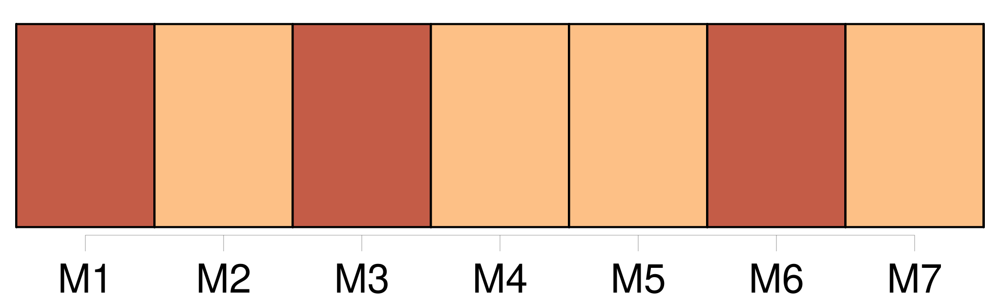

Longueur nb maillons : 10 mentions |
 |
J'eusse voulu pouvoir rester là toujours, mais [notre] bonne, envoyée par ma mère, vint nous rappeler au travail. [67 phrases] On racontait que des uhlans avaient été capturés près de Lagny, à quinze kilomètres de chez [nous]
Tandis que ma tante parlait d'une amie, enfuie dès les premiers jours, après avoir enterré dans son jardin des pendules, des boîtes de sardines, je demandai à mon père le moyen d'emporter [nos] vieux livres ; c'est ce qu'il me coûtait le plus de perdre.
Enfin, au moment où [nous] nous apprêtions à la fuite, les journaux [nous] apprirent que c'était inutile. [256 phrases] Il me la remit, je l'empochai, jetant les autres dans la boîte de [notre] grille. [22 phrases] Je revins chez [nous] un peu après l'heure où je savais que mon père avait coutume d'y être. [23 phrases]
Encore une fois, mon père ne dit pas non, à condition que je continuasse d'apprendre chez [nous] ce que j'aurais dû apprendre au collège, mais avec la liberté de peindre. [20 phrases] J'étais dans ces dispositions de cœur quand, à la fin de novembre, un mois après avoir reçu une lettre de faire-part de son mariage, je trouvai, en rentrant chez [nous] , une invitation de Marthe qui commençait par ces lignes : « Je ne comprends rien à votre silence. [178 phrases]
Comme [toute la maison] dormirait encore, personne ne pourrait deviner l'heure à laquelle j'étais parti, et si j'avais découché. |

|
Il est possible de télécharger la ressource sur la page Ortolang |
Si vous avez des questions ou vous voyez des erreurs, merci d'envoyer un mail à silvia.federzoni89@gmail.com |